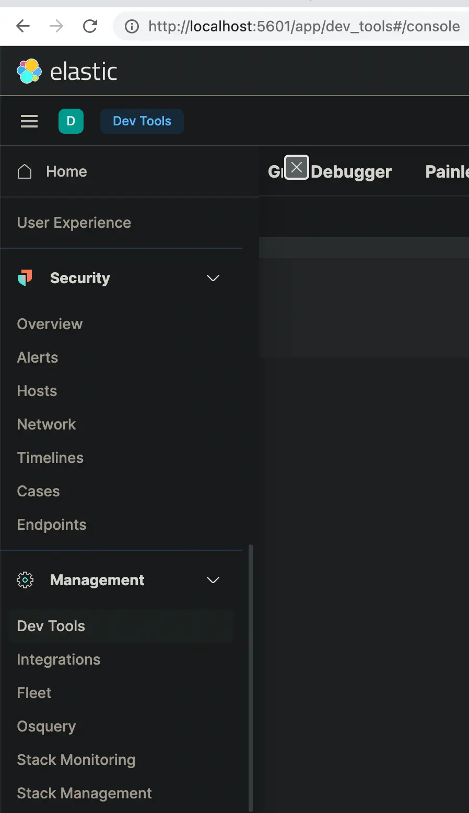
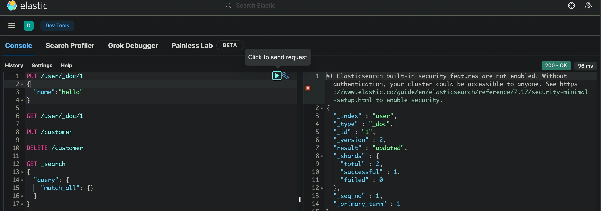

docker run --name ms1.0 --restart always -p 9080:7700 -v $(pwd)/meili_data:/meili_data -d getmeili/meilisearch:v1.0
elasticsearch,基于Lucene(TM)的开源搜索引擎
brew tap elastic/tap
brew install elastic/tap/elasticsearch-full
brew services start elasticsearch-full
curl -X GET http://localhost:9200/
# 查看安装的插件
curl -X GET http://localhost:9200/_cat/plugins
docker pull docker.elastic.co/elasticsearch/elasticsearch:8.1.3
docker run -p 9200:9200 -p 9300:9300 -e "discovery.type=single-node" docker.elastic.co/elasticsearch/elasticsearch:8.1.3
名词概念对比
| 关系数据库 | elasticsearch |
|---|---|
| 库 | 索引 |
| 表 | 类型 |
| 表模式 | 映射 |
| 行 | 文档 |
| 字段 | 字段 |
| 字段类型 | 说明 |
|---|---|
| string | 字符串 |
| byte, short, integer, long | 数字 |
| float, double | 浮点 |
| boolean | 布尔 |
| date | 日期 |
采用倒序存储,关键字 –》[文档1, 文档2, 文档3 ….],所以能快速搜索
插入的数据自动地创建类型(type)及其映射(mapping)
没有事务一致性,采用乐观版本,文档每更新一次，文档元数据中版本号就增加
传统数据库更关注数据一致性，永久存储等,在于操作数据,es则偏重于快速搜索
通常用数据库数据初始化es索引
索引别名理解及应用
默认端口9200
查询语法
match,全文搜索,支持text, number, date or boolean
GET /_search
{
"query": {
"match": {
"message": "this is a test"
}
}
}
term,精确相等,不要查询text字段
GET /_search
{
"query": {
"term": {
"user.id": {
"value": "kimchy",
"boost": 1.0
}
}
}
}
range
浏览器插件
kibana
# 注意和elasticsearch版本配对,否则跑不起来
curl -O https://artifacts.elastic.co/downloads/kibana/kibana-7.17.2-darwin-x86_64.tar.gz
curl https://artifacts.elastic.co/downloads/kibana/kibana-7.17.2-darwin-x86_64.tar.gz.sha512 | shasum -a 512 -c -
tar -xzf kibana-7.17.2-darwin-x86_64.tar.gz
cd kibana-7.17.2-darwin-x86_64/
./bin/kibana
# 浏览器访问
http://localhost:5601/
 
如果报内存不够,则删除monitoring索引